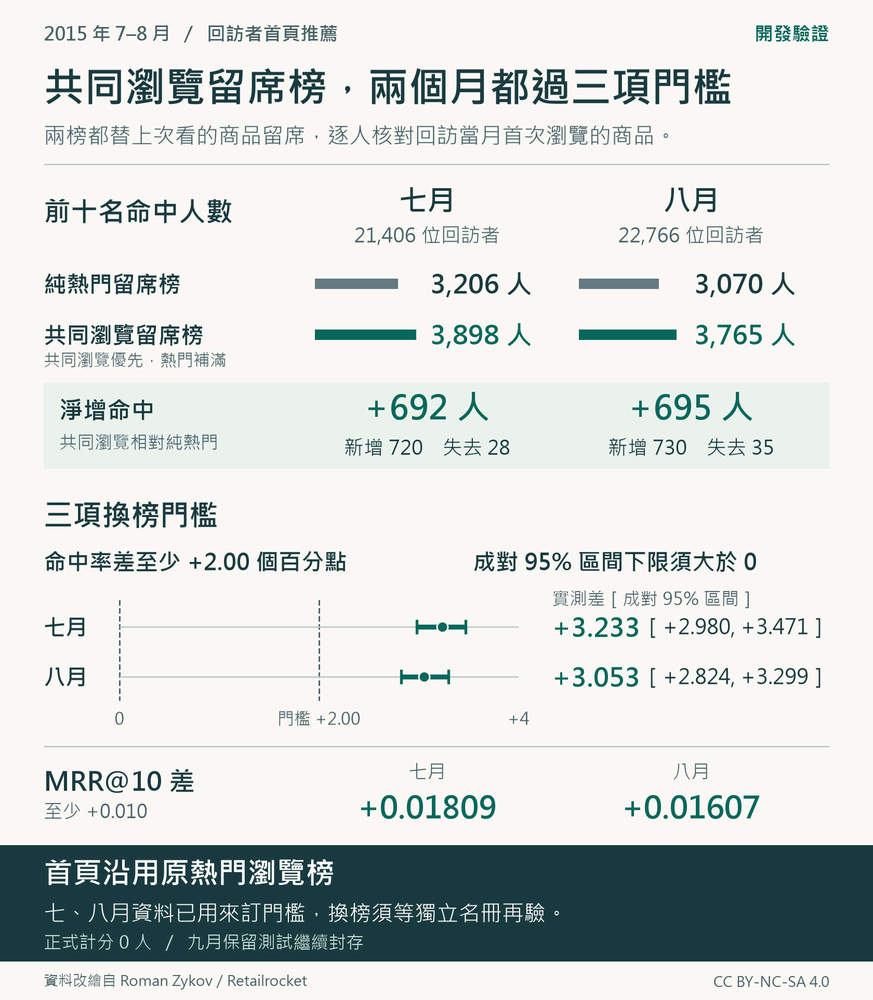

回訪者首頁留席榜
兩榜都替上次看的商品留一席。把共同瀏覽的商品排在熱門商品之前，能猜中訪客回來時第一眼看了什麼嗎？
開發回測月份
選擇八月回放案例


查看七、八月成效對照圖兩榜各命中幾人、命中率差與三項換榜門檻。兩榜前十名
- 上次看的商品（八月前最後一次瀏覽）
- 回訪第一眼（八月首次瀏覽）
| 名次 | 純熱門留席榜 | 共同瀏覽留席榜 |
|---|
共同瀏覽榜先排相關商品，再用熱門商品補滿。兩榜都保留上次看的商品原有名次，缺席才換進第十名。